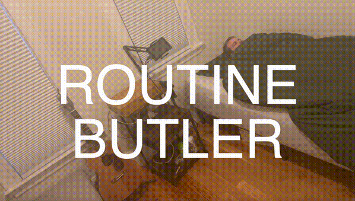

About Me
Hello, I'm Sonny George. I am actively seeking engineering/research opportunities. I hold an MS in Computational Linguistics from Brandeis University and a BS in Statistics from BYU. Although these days, my interests primarily lie in deep learning and embodied AI, I am a generally passionate full-stack engineer that simply loves building maintainable software systems that solve real-world problems.
Publications
Benchmarking Arbitrary Natural Language Tasks in 3D Open Worlds
Sonny George, Chris Sypherd, Rocco Ahching, and Dylan Cashman
Proceedings of the 6th Annual Embodied Artificial Intelligence Workshop at CVPR 2025 (Oral Spotlight)
Probing the Capacity of Language Model Agents to Operationalize Disparate Experiential Context Despite Distraction
Sonny George, Chris Sypherd, and Dylan Cashman
Findings of the 2024 Conference on Empirical Methods in Natural Language Processing
Incorporating Token Usage into Prompting Strategy Evaluation
Chris Sypherd, Sergei Petrov, Sonny George, and Vaishak Belle
ArXiv Preprint, May 2025
Presentations
sr-OLTHAD+SemanticSteve: Toward Any-Horizon Open-Ended Autonomy (Master's Capstone Presentation)
May 2025
Blog Posts
January 10, 2025: What is the proper level of I/O abstraction in world models (that generate simulated rollouts)?
A Few (humble) Hardware Projects
BC+PPO Learning for Simple Object Picking

Routine Butler
Vision-Based Line-Following Robot With Lidar Obstacle Avoidance